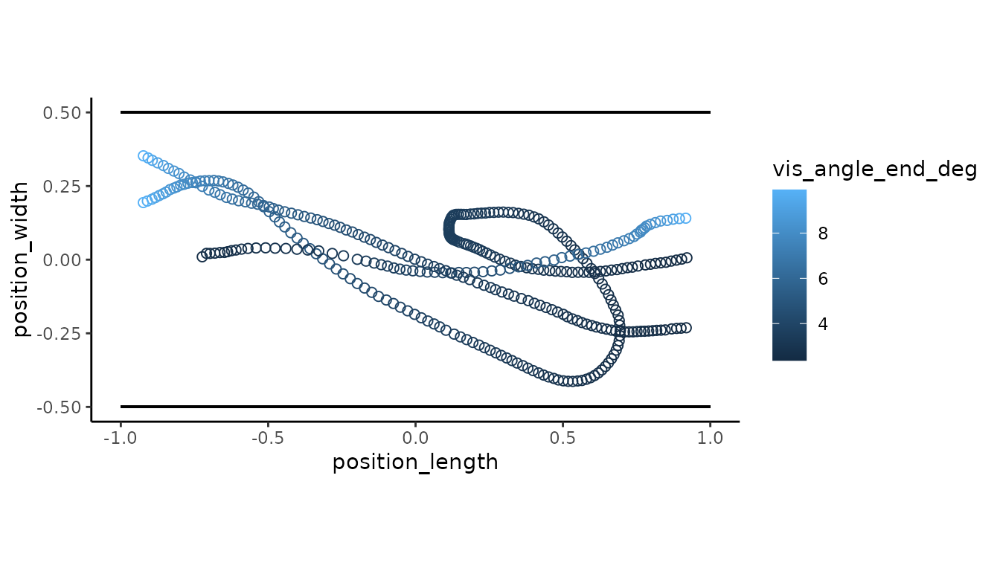

Estimating visual perceptions from tracking data
Eric R. Press
2024-03-02
Source:vignettes/visual-perception-functions.Rmd
visual-perception-functions.RmdIntroduction
Studies of visually guided locomotion in birds, insects or even humans often involve data gathered from motion capture technologies such as Optitrack’s (Motive), or the Straw Lab’s (Flydra). For these experiments, it is important to understand how visual stimuli influence behavior. Although is it not possible to measure how subjects directly perceive visual stimuli, it is possible to use motion capture data to calculate estimates of stimulus properties as they are perceived by the subject. With the tools available in pathviewr, researchers in ethology or psychology may provide analyses of both stimulus and response under natural locomotor conditions.
Inherent to estimations of visual perceptions, we make several assumptions, which will be discussed below. We welcome suggestions and aim to address any assumptions that limit the accuracy of these estimates.
To bridge the gap between objective measures of subject position and estimates of subjective stimulus perception, we can begin by calculating the angle that a visual pattern subtends on the subject’s retina: the visual angle (θ). Visual angles can be used to calculate aspects of image motion such as the rate of visual expansion (Dakin et al., 2016). For a detailed review of different forms of visual motion and how they’re processed by the brain, see (Frost, 2010).
Visual angles can be calculated provided there is information about the physical size of the pattern and its distance from the subject’s retina. Because researchers can control or measure the size of a pattern, and we can calculate the distance between the subject and pattern using motion capture data, we can further calculate the visual angle produced by patterns in the visual scene. Therefore, we first need to calculate the distance from the subject’s retina to the pattern.
Currently, we assume the subject’s gaze is directly frontal or lateral to the face, in effect estimating image properties at single points in the frontal and lateral fields of view, respectively. We currently calculate distances to the center of the subject’s head rather than the position of the retina; future versions of pathviewr will include features addressing these limitations, such as including head orientation information and eye position relative to the center of the subject’s head.

Visual angles can be calculated using the size of a visual pattern (stim_param) and the distance to the pattern. Larger patterns at shorter distances produce larger visual angles. For dot stimuli, visual angles can be calculated independent of stimulus orientation.
Data preparation
Data objects must be prepared as described in the Data Import and Cleaning vignette pipeline prior to their use with these functions. For a detailed description of the importing and cleaning functions, and when to use them, please see the linked vignette.
Let’s work with a few example datasets included in the package. pathviewr_motive_example_data.csv is a .csv file exported from Motive. pathviewr_flydra_example_data.mat is a .mat file exported from Flydra. For more coarse-grained data cleaning tasks, pathviewr contains an all-in-one cleaning function clean_viewr. We will use this function for the following examples.
## Import motive data set
motive_data <- # import
read_motive_csv(
system.file("extdata", "pathviewr_motive_example_data.csv",
package = 'pathviewr')
)
## Clean motive data set
motive_full <-
motive_data %>%
clean_viewr(
relabel_viewr_axes = TRUE,
gather_tunnel_data = TRUE,
trim_tunnel_outliers = TRUE,
standardization_option = "rotate_tunnel",
select_x_percent = TRUE,
desired_percent = 50,
rename_viewr_characters = FALSE,
separate_trajectories = TRUE,
max_frame_gap = "autodetect",
get_full_trajectories = TRUE,
span = 0.95
)
#> autodetect is an experimental feature -- please report issues.
## Import flydra data set
flydra_data <-
read_flydra_mat(
system.file("extdata", "pathviewr_flydra_example_data.mat",
package = 'pathviewr'),
subject_name = "birdie_wooster")
## Clean flydra data set
flydra_full <-
flydra_data %>%
clean_viewr(
relabel_viewr_axes = FALSE,
gather_tunnel_data = FALSE,
trim_tunnel_outliers = FALSE,
standardization_option = "redefine_tunnel_center",
length_method = "middle",
height_method = "user-defined",
height_zero = 1.44,
get_velocity = FALSE,
select_x_percent = TRUE,
desired_percent = 60,
rename_viewr_characters = FALSE,
separate_trajectories = TRUE,
get_full_trajectories = TRUE
)Add experiment information with insert_treatments()
Now that our objects have been cleaned, we must use insert_treatments() to add information about the experiments, including relevant properties of the visual stimulus and experimental tunnel that are necessary for calculating visual perceptions.
pathviewr currently supports rectangular (box) or V-shaped experimental tunnels, though we are interested in including additional tunnel configurations.
If you would like to request any additional features such as other tunnel configurations, please create an issue (here)
V-shaped tunnel example
The data within motive_full were collected from birds flying through a 3m long V-shaped tunnel in which the height of the origin (0,0,0) was set to the height of the perches that were 0.3855m above the vertex, which was angled at 90 degree. The visual stimuli on the positive and negative walls of the tunnel (where position_width values > 0 and < 0, respectively) were stationary dot-fields. Each dot was of size 0.05m in diameter. The visual stimuli on the positive and negative end walls of the tunnel (where position_length > 0 and < 0, respectively) were dot fields with dots 0.1m in diameter. This treatment was referred to as "latB".
Therefore we will use the following code:
motive_treatments <-
motive_full %>%
insert_treatments(tunnel_config = "v",
perch_2_vertex = 0.3855,
vertex_angle = 90,
tunnel_length = 2,
stim_param_lat_pos = 0.05,
stim_param_lat_neg = 0.05,
stim_param_end_pos = 0.1,
stim_param_end_neg = 0.1,
treatment = "latB")
names(motive_treatments)
#> [1] "tunnel_config" "perch_2_vertex" "vertex_angle"
#> [4] "tunnel_length" "stim_param_lat_pos" "stim_param_lat_neg"
#> [7] "stim_param_end_pos" "stim_param_end_neg" "treatment"
#> [10] "frame" "time_sec" "subject"
#> [13] "position_length" "position_width" "position_height"
#> [16] "rotation_length" "rotation_width" "rotation_height"
#> [19] "rotation_real" "mean_marker_error" "velocity"
#> [22] "length_inst_vel" "width_inst_vel" "height_inst_vel"
#> [25] "traj_id" "file_sub_traj" "traj_length"
#> [28] "start_length" "end_length" "length_diff"
#> [31] "start_length_sign" "end_length_sign" "direction"motive_treatments now has the variables tunnel_config, perch_2_vertex, vertex_angle, tunnel_length, stim_param_lat_pos, stim_param_lat_neg, stim_param_end_pos, and stim_param_end_neg which are needed to calculate visual angles. The variable treatment has also been included and all of this information has been stored in the object’s metadata.
Box-shaped tunnel example
The data within flydra_full were collected from birds flying in a 1 x 3m rectangular tunnel (a box). The visual stimuli were the same as in the motive example.
flydra_treatments <-
flydra_full %>%
insert_treatments(tunnel_config = "box",
tunnel_width = 1,
tunnel_length = 3,
stim_param_lat_pos = 0.05,
stim_param_lat_neg = 0.05,
stim_param_end_pos = 0.1,
stim_param_end_neg = 0.1,
treatment = "latB")flydra_treatments similarly has the variables tunnel_config, tunnel_width, tunnel_length, stim_param_lat_pos, stim_param_lat_neg, stim_param_end_pos, stim_param_end_neg and treatment.
Calculating visual angles
Start by calculating distances to visual stimuli
To estimate the visual angles perceived by the subject is it moves through the tunnel, we first need to calculate the distance between the subject and the visual stimuli. For this, we will use calc_min_dist_v or calc_min_dist_box depending on the configuration of the experimental tunnel. These functions calculate the minimum distance between the subject and the surface displaying a visual pattern, therefore maximizing the visual angles.
For V-shaped tunnels, several internal calculations are required and can be added to the output object with simplify_output = FALSE. Otherwise, the minimum distance are computed to the lateral walls and the end wall to which the subject is facing.
motive_min_dist <-
motive_treatments %>%
calc_min_dist_v(simplify_output = FALSE)
## Display minimum distances to the positive lateral walls
## Viewpoint is from the end of the tunnel
motive_min_dist %>%
ggplot(aes(x = position_width, y = position_height)) +
geom_point(aes(color = min_dist_pos), size = 2, shape = 1) +
coord_fixed() +
theme_classic() +
geom_segment(aes(x = 0, # positive wall
y = -0.3855,
xend = 0.5869,
yend = 0.2014)) +
geom_segment(aes(x = 0, # negative wall
y = -0.3855,
xend = -0.5869,
yend = 0.2014))
#> Warning in geom_segment(aes(x = 0, y = -0.3855, xend = 0.5869, yend = 0.2014)): All aesthetics have length 1, but the data has 449 rows.
#> ℹ Did you mean to use `annotate()`?
#> Warning in geom_segment(aes(x = 0, y = -0.3855, xend = -0.5869, yend = 0.2014)): All aesthetics have length 1, but the data has 449 rows.
#> ℹ Did you mean to use `annotate()`?
flydra_min_dist <-
flydra_treatments %>%
calc_min_dist_box()
## Display minimum distances to the end walls
## Viewpoint is from above the tunnel
flydra_min_dist %>%
ggplot(aes(x = position_length, y = position_width)) +
geom_point(aes(color = min_dist_end), size = 2, shape = 1) +
coord_fixed() +
theme_classic() +
geom_segment(aes(x = -1, # negative wall
y = -0.5,
xend = 1,
yend = -0.5)) +
geom_segment(aes(x = -1, # positive wall
y = 0.5,
xend = 1,
yend = 0.5))
#> Warning in geom_segment(aes(x = -1, y = -0.5, xend = 1, yend = -0.5)): All aesthetics have length 1, but the data has 381 rows.
#> ℹ Did you mean to use `annotate()`?
#> Warning in geom_segment(aes(x = -1, y = 0.5, xend = 1, yend = 0.5)): All aesthetics have length 1, but the data has 381 rows.
#> ℹ Did you mean to use `annotate()`?Now get visual angles
motive_vis_angle <-
motive_min_dist %>%
get_vis_angle()
## Visualize the angles produced from stimuli on the positive wall
## Viewpoint is from the end of the tunnel
motive_vis_angle %>%
ggplot(aes(x = position_width, y = position_height)) +
geom_point(aes(color = vis_angle_pos_deg), size = 2, shape = 1) +
coord_fixed()+
theme_classic() +
geom_segment(aes(x = 0, # positive wall
y = -0.3855,
xend = 0.5869,
yend = 0.2014)) +
geom_segment(aes(x = 0, # negative wall
y = -0.3855,
xend = -0.5869,
yend = 0.2014))
#> Warning in geom_segment(aes(x = 0, y = -0.3855, xend = 0.5869, yend = 0.2014)): All aesthetics have length 1, but the data has 449 rows.
#> ℹ Did you mean to use `annotate()`?
#> Warning in geom_segment(aes(x = 0, y = -0.3855, xend = -0.5869, yend = 0.2014)): All aesthetics have length 1, but the data has 449 rows.
#> ℹ Did you mean to use `annotate()`?Notice larger visual angles as the subject approaches the positive wall.
flydra_vis_angle <-
flydra_min_dist %>%
get_vis_angle()
## Visualize the angles produced by stimuli on the end walls
## Viewpoint is from above the tunnel
flydra_vis_angle %>%
ggplot(aes(x = position_length, y = position_width)) +
geom_point(aes(color = vis_angle_end_deg), size = 2, shape = 1) +
coord_fixed() +
theme_classic() +
geom_segment(aes(x = -1, # negative wall
y = -0.5,
xend = 1,
yend = -0.5)) +
geom_segment(aes(x = -1, # positive wall
y = 0.5,
xend = 1,
yend = 0.5))
#> Warning in geom_segment(aes(x = -1, y = -0.5, xend = 1, yend = -0.5)): All aesthetics have length 1, but the data has 381 rows.
#> ℹ Did you mean to use `annotate()`?
#> Warning in geom_segment(aes(x = -1, y = 0.5, xend = 1, yend = 0.5)): All aesthetics have length 1, but the data has 381 rows.
#> ℹ Did you mean to use `annotate()`?
Notice larger visual angles as the subject approaches the end wall that it is moving towards.
Calculating spatial frequency
With visual angles, we can now determine the spatial frequency of a visual pattern as it is perceived by the subject. Spatial frequency refers to the size of the pattern in visual space. It’s often reported as the number of cycles of a visual pattern per 1 degree of the visual field (cycles/degree). Here, we will define a cycle length as the length used for the stim_param. For a given distance from the subject, a larger visual pattern produces a smaller spatial frequency, whereas a smaller visual pattern produces a larger spatial frequency.
To calculate the spatial frequency of the visual stimuli as perceived by the subject some distance from the stimuli, we will use get_sf().
motive_sf <-
motive_vis_angle %>%
get_sf()
## Visualize the spatial frequency of the stimulus on the positive wall
## point is from the end of the tunnel
motive_sf %>%
ggplot(aes(x = position_width, y = position_height)) +
geom_point(aes(color = sf_pos), size = 2, shape = 1) +
coord_fixed()+
theme_classic() +
geom_segment(aes(x = 0, # positive wall
y = -0.3855,
xend = 0.5869,
yend = 0.2014)) +
geom_segment(aes(x = 0, # negative wall
y = -0.3855,
xend = -0.5869,
yend = 0.2014))
#> Warning in geom_segment(aes(x = 0, y = -0.3855, xend = 0.5869, yend = 0.2014)): All aesthetics have length 1, but the data has 449 rows.
#> ℹ Did you mean to use `annotate()`?
#> Warning in geom_segment(aes(x = 0, y = -0.3855, xend = -0.5869, yend = 0.2014)): All aesthetics have length 1, but the data has 449 rows.
#> ℹ Did you mean to use `annotate()`?Notice the spatial frequency increases the further the subject recedes from positive wall.
flydra_sf <-
flydra_vis_angle %>%
get_sf()
## Visualize the spatial frequency of the stimulus on the end walls
## Viewpoint is from above the tunnel
flydra_sf %>%
ggplot(aes(x = position_length, y = position_width)) +
geom_point(aes(color = sf_end), size = 2, shape = 1) +
coord_fixed() +
theme_classic() +
geom_segment(aes(x = -1, # negative wall
y = -0.5,
xend = 1,
yend = -0.5)) +
geom_segment(aes(x = -1, # positive wall
y = 0.5,
xend = 1,
yend = 0.5))
#> Warning in geom_segment(aes(x = -1, y = -0.5, xend = 1, yend = -0.5)): All aesthetics have length 1, but the data has 381 rows.
#> ℹ Did you mean to use `annotate()`?
#> Warning in geom_segment(aes(x = -1, y = 0.5, xend = 1, yend = 0.5)): All aesthetics have length 1, but the data has 381 rows.
#> ℹ Did you mean to use `annotate()`?Notice the spatial frequency decreases as the subject approaches the end wall that it is moving towards.